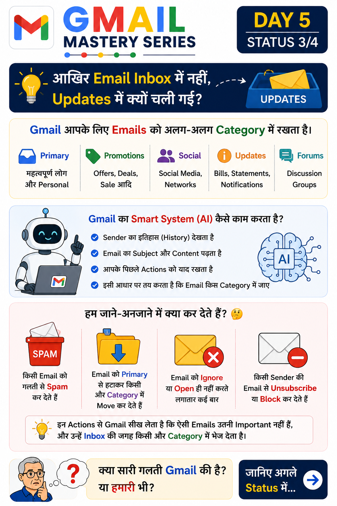

चरण 1 / 6 • Step 1 of 6
Gmail में समझें कि आपके बिजली बिल और उपयोगिता संदेश कहाँ आते हैं
💡 अवधारणा समझें (Concept Explanation):
Gmail में आने वाली ईमेल्स अपने-आप अलग-अलग टैब में बँटती हैं। नीचे दिए गए मूल इन्फोग्राफिक में देखें:
व्यक्तिगत ईमेल Primary में आती हैं, विज्ञापन Promotions में जाते हैं, और सोशल अलर्ट Social में रहते हैं।
महत्वपूर्ण बात यह है कि उपयोगिता बिल (Utility Bills जैसे बिजली, फोन या बैंक रसीदें) अक्सर Updates टैब में दिखाई देते हैं—लेकिन हमेशा नहीं! आपके प्रेषक के ईमेल पते और सेटिंग्स के आधार पर कुछ बिल सीधे Primary टैब में भी आ सकते हैं। इसलिए केवल टैब बदलने के भरोसे रहने से पुराने बिल समय पर नहीं मिलते।

🔍 पूरा बड़ा देखने के लिए क्लिक करें
📌 मूल इन्फोग्राफिक संदर्भ (Day 05 Status 3): ध्यान दें कि Updates श्रेणी के तहत विशेष रूप से "Bills, Statements, Notifications" का उल्लेख है।
🎯 आपका प्रैक्टिकल कार्य (Hands-on Task):
- 1. अपना Gmail इनबॉक्स खोलें: ऊपर दिए गए टैब बार को देखें (Primary, Promotions, Social, Updates)।
- 2. Updates टैब जाँचें: यदि Updates टैब खुला है, तो उस पर क्लिक करें और देखें कि क्या पिछले महीने का बिजली बिल या रसीद वहाँ आई है।
- 3. Primary टैब भी देखें: यदि बिल Updates में नहीं मिला, तो Primary टैब में देखें कि वह किस नाम/ईमेल पते से आया है।
✅ अपेक्षित परिणाम (Expected Result):
आपको स्पष्ट पता चल जाएगा कि आपके प्रेषक का बिजली बिल वर्तमान में किस टैब में आता है और उसका प्रेषक नाम क्या है।